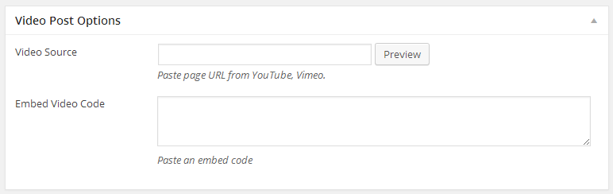
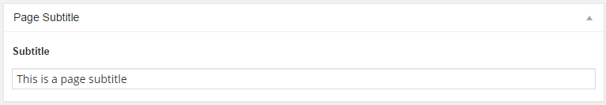

Sprout Wordpress Theme
Documentation & Usage
First of all a huge THANK YOU for purchasing my WordPress Theme at Themeforest. If you have any questions that are beyond the scope of this help file, please join our Support Forums. If you’d like to start a new thread over there I’ll get any issues you’re experiencing sorted out. You can also follow me on Themeforest to keep track of all my theme updates and future themes. Thanks so much!
Contact: Envirra
Have a problem with theme?
01. Getting Started
Theme Requirements
In order to proceed with the theme installation, you must be running WordPress 3.8 or higher, PHP 5.3 or higher.
Theme Download
Navigate to your downloads tab on Themeforest and find Sprout. Click the download button to see the two options. The Main Files contain everything (including documentation) and the Installable WordPress Theme is just the installable WordPress theme file. Please download the Installable WordPress Theme file for installation.
Theme Installation via Wordpress
- Download the wordpress theme file from Themeforest.
- Navigate to
Appearance → Themes. - Click
Install Themesand hit theuploadbutton - Navigate to find the
sprout.zipfile on your computer and clickInstall Now - Wait while the theme is uploaded and installed.
- Activate the newly installed theme. Go to
Appearance → Themesand activate it. - Click the link
Begin install pluginsto install and activate the required plugins.
Theme Installation via FTP (alternate method)
- Download the wordpress theme file from Themeforest.
- Log into your hosting space via an FTP software.
- Unzip the
press.zipfile and ONLY use the extracted Sprout theme folder. - Upload the extracted Sprout theme folder into
wp-content → themesfolder. - Activate the newly installed theme. Go to
Appearance → Themesand activate it. - Install and activate the required plugins. Please see the previous method.
Migrating From Another Theme
If you are migration from a theme which used the native featured images functionality of WordPress. Please use the Regenerate Thumbnails plugin to resize all the thumbnails for better image quality on your site. Click the link above and download the free plugin, and read through the steps it contains, it has all the information you need.
How To Update The Theme
You can update your theme via FTP or via WordPress. See the information below for each method. No matter what method you choose, you first need to download the new theme files from Themeforest.
How To Update Your Theme Via FTP
- Go to
/wp-content/themeslocation and backup yoursprouttheme folder by saving it to your computer, or you can choose to simply delete it. Your content will not be lost. - Retrieve the
sprout.zipfile from your new Themeforest download (only theme file) and extract the file to get thesprouttheme folder. - Then simply drag and drop the new Sprout theme folder into
/wp-content/themeslocation. Choose toReplacethe current one if you did not delete it.
How To Update Your Theme Via WordPress
- You need to deactivate the current Sprout theme in the
Appearance → Themessection by simply activating a different theme. Once you activate a different theme, you can delete the Sprout theme. Dont worry, your content will not be lost. - Retrieve the
sprout.zipfile from your new Themeforest download (only theme file) and extract the file to get thesprouttheme folder. - Then simply upload the
sprout.zipfile in theAppearance → Themessection. Click on theInstall Themestab at the top and choose to upload the zip file. - Once it uploads, choose to activate it. You’re done!
Plugins Installation
We recommend you to install these plugins to get more from the theme.
- Sprout Shortcodes - This is our easy to use and intuitive shortcodes generator. Read more about our Shortcodes in chapter 10.
- Sprout Theme Options Panel - Enable theme options panel for your customization.
Other plugins we recommend to you to install (optional):
- Envato WordPress Toolkit - WordPress toolkit for Envato Marketplace hosted items. Currently supports the following theme functionality: install, upgrade, & backups during upgrade. After you've activate this plugin, Follow these steps
- To establish an Envato Marketplace API connection navigate to the `Envato Toolkit` page and insert your Marketplace username and secret API key in the designated input fields.
- To obtain your API Key, visit your “My Settings” page on any of the Envato Marketplaces.
- Once the API connection has been established you will see a list of themes that can be auto installed or updated.
- W3 Total Cache - Easy Web Performance Optimization (WPO) using caching: browser, page, object, database, minify and content delivery network support.
- Better WordPress Minify - Allows you to minify your CSS and JS files for faster page loading for visitors.
- Custom sidebars - Allows to create your own widgetized areas and custom sidebars, and select what sidebars to use for each post, page or archive page.
- Regenerate Thumbnails - Useful if your site already have a lot of content and images. Allows you to delete all old images size and regenerate the thumbnails for your image attachments.
- Simple Local Avatars - Adds an avatar upload field to user profiles. Generates requested sizes on demand just like Gravatar.
- Contact Form 7 - Contact Form 7 can manage multiple contact forms, plus you can customize the form and the mail contents flexibly with simple markup
- WP Flexible Map - Flexible Map allows you to add Google Maps to your WordPress website.
Demo Content Import (optional)
The theme comes with a .xml file containing demo content you can import into your WordPress site. This will help you get started, in case you are running on a fresh WP installation with no content at all.
1-Click Demo Content Installation
- Navigate to
Theme Options. - Click on
Import Demobutton to start import. Please be patience as it will take quite some time. Do not interrupt it. - If you see some messages about failed to import media, It's ok to ignore that. But if you need all demo images to be shown on your site, Please import again.
- If you see a dupicated menu items after importing, It's caused from importing several times. You can delete a duplicated menu item.
Sprout Shortcodes plugin. The homepage of demo content is required this plugin.
How to Import Demo Content by Manual
- Make sure the plugin Wordpress Importer is already installed and activated on your wordpress.
- Navigate to
Tools → Import. - Click on
WordPresslink (if the Importer plugin is not installed, install it now). - Select the
demo-content.xmlfile located in the archive which you have downloaded from ThemeForest (from the All files archive) and click "Upload file and import" button. - On the next screen, under Assign Authors, select or enter a new username for each author.
- Please be patience as it will take quite some time. Do not interrupt it.
- (optional) Once it's done, go to
Appearance → Menus → Manage Locations. SelectMain MenuasSample Main Menu. - Your are done! Now your site is populated with demo content.
02. Homepage Setup
Create a Page
- Navigate to:
Pages → Add New. - Enter the title for this page: "Home page" or "Home", whatever you like.
- We prefer to use the VW Simple Page Composer to create the home page.
- Click
Publish.
Simple Page Composer
After selecting the VW Simple Page Composer template (at Page Template dropdown) you will see the Page Composer interface which easily lets you create the homepage layout. To get started click on the Add Section button and you will see all the available sections you can add to your homepage.

- Post Box - Display a posts from the selected category.
- Post Box with Sidebar - Display a posts from the selected category with sidebar
- Post Slider - Display a posts as a slider
- Full Page Link Section - Display big image as a link to the selected page.
- Custom Content - Display your content in theme style. Using shortcode in the content is allowed.
Example Homepage Setup
Please import demo content before try these examples.
Sample Home 1
Page Template: VW Simple Page Composer, Show Page Title: No.
- Post Slider - Number of slide:
3, Category:All, Posts Order:Latest Featured Posts - Post Box with Sidebar - Number of post:
6, Category:All, Posts Order:Latest Posts, Layout:Masonry grid - 2 columns, Pagination:Show - Full Page Link Section - Page:
Sample Full Link Pageor any page that has a featured image. - Post Box - Number of post:
5, Category:All, Posts Order:Latest Reviews, Layout:Carousel, Pagination:Hide
Sample Home 2
Page Template: VW Simple Page Composer, Show Page Title: No.
- Post Slider - Number of slide:
3, Category:All, Posts Order:Most Review Scores - Post Box - Number of post:
3, Category:All, Posts Order:Most Review Scores, Layout:Box grid - columns, Pagination:Hide - Post Box with Sidebar - Number of post:
4, Category:All, Posts Order:Latest Posts, Layout:Classic, Pagination:Show - Full Page Link Section - Page:
Sample Full Link Pageor any page that has a featured image.
Front Page Displays
Now you have to tell WordPress wich page is your site homepage.
- Navigate to:
Settings → Reading. - In a
Front Page Displaysoption, selectA static page. - In a
Front page:option, select your home page. In case of the demo content is already imported, Choose any of these pagesSample Home 1,Sample Home 2,Sample Home 3for a sample of homepage. - You are done! Now you have your home page.
03. Setup Categories
Setting up categories for this theme is no different than ordinary category setup in WordPress, however, we provide some additional layout settings.
Go to Posts → Categories and fill in the info required. You will see an extra options as follows:

- Category Blog Layout - Select the layout for displaying a posts.
- You can change the
Site Defaultvalue atTheme Options → Blog → Default Blog Layout - Selecting a
Customoption, You need to create a custom layout. More details on topic Advanced Customization (The custom option is for advanced user who have a knowledge in coding).
- You can change the
- Sidebar Position - Choose the position of sidebar on the category page.
- Left Sidebar - Choose the sidebar to be displayed as a left sidebar.
- Right Sidebar - Choose the sidebar to be displayed as a right sidebar.
04. Creating Posts
Adding a new post is the same way as default WordPress installations (just navigate to Posts → Add New), however, there are extra options that might need explaining.
Post Options
You will see the following post options when adding a post.
- Post Layout - Choose layout for displaying the post on the single post page.
- You can change the
Site Defaultvalue atTheme Options → Blog → Default Post Layout - Selecting a
Customoption, You need to create a custom layout. More details on topic Advanced Customization (The custom option is for advanced user who have a knowledge in coding).
- You can change the
- Mark this post as featured - Check to make the current post featured. Featured Posts Slider section must be added on the Homepage edit page.
Also, You will see a sidebar options on the right of screen.
- Sidebar Position - Choose the sidebar position for this post.
- You can change the
Defaultvalue atTheme Options → Blog → Default Sidebar Position
- You can change the
- Left Sidebar - Choose the sidebar to be displayed as a left sidebar.
- Right Sidebar - Choose the sidebar to be displayed as a right sidebar.
Featured Image
While the theme can function without featured images, it's highly recommended that you add a featured image to each post. This not only makes your site/blog more lively but also improves user experience.
To set the featured image, use the WordPress normal method. Click Set featured image link in the Featured Image box and choose the image.
Recommended Image Size
Image size (dimensions) will depend on what type of layout you're using throughout your WordPress installation or per individual post basis. This image will not only be used on the post, but also on the category listing pages.
- Compatible with all layouts and full-width slider - 1263 x 560 minimum (width x height).
- For posts that will only appears in homepage blocks and listings - 750 x 375 minimum.
Featured Image Credits
You can insert a credit for a featured image by enter a credit message into a Caption field of image when you're selecting the image from Media Library.
Supported Post Formats
We enabled four WordPress native post formats. Each format has it's own custom fields (except Standard) for simple content making.
Video Format
Setup your post normally and set a featured image. There are 2 methods for embeding video in a post.
- Embed via video url - Copy the url of youtube or vimeo video page and paste the code in the
Video Source. - Embed video code - Copy the embed code of the video from YouTube, Vimeo or any other site that gives you video embed codes. Paste the code in the
Featured Video Codebox.
Audio Format
WordPress supports embedding into posts by default. An audio player will be inserted into the post.
- Click
Add Mediabutton. - Select your audio file. Once uploaded, make sure embed option is selected.
- Insert and Publish.
If you need to embed the external audio, There are 2 methods for embeding audio in a post.
- Embed SoundCloud audio - Copy the url of SoundCloud audio page and paste the code in the
Sound Cloud Audio Source. - Embed audio code - Copy the embed code of the audio from SoundCloud or any other site that gives you audio embed codes. Paste the code in the
Featured Audio Codebox.
Gallery Format
Setup your post normally and set a featured image. Next, Click Select or Upload Images button in the Gallery Post Options box and choose your images. You can re-arrange the order of image by dragging. The selected images will be displayed as image slider.
To insert a tiled gallery, Follow this steps:
- Click
Add Mediabutton just the above the editor. A media window will open. - Click
Create Gallery. Upload images or select from Media Library. ClickCreate a new gallery. - Click
Insert gallery. - (optional) You can custom the tiled gallery layout at
Theme Options → Blog → Custom Tiled Gallery → Tiled Gallery Layout. - (optional) If you wish to use the gallery plugin like Jetpacks, You can turn of the built-in tiled gallery at
Theme Options → Blog → Custom Tiled Gallery → Enable Custom Tiled Gallery.
Review System
You can add a review and score fetures to any post. To enable this feature locate the "Review Option" meta box under the editor and click the "Enable Review" checkbox.
After the additional fields are open you can start creating your review.
- Position - Choose position for showing the review box. When choosing the
Customposition, You need to insert shortcode[review]into post content. - Review Summary - Here you can add a line of text, which will describe why you gave this score to this post. Optional and can be left blank.
- Score Style - Choose style of score to be shown.
- Review Score - This feature gives you the ability to make a score with different parameters. Each row has two fields:
- Label - The name of the parameter and a Score
- Score - The score must between 0 to 100.
05. Creating Pages
Creating pages is a simple process. Please follow this steps:
- To start creating the pages navigate to
Pages → Add New. - Enter the page title.
- Enter the page content. You can also use a shortcode.
-
(optional) Locate
Page Optionsmeta box on the page. The page options are the follows- Page Subtitle - Enter a subtitle for this page.
- (optional) To add a background image on the page title. Click the link
Set featured imageand choose the background image.
Page Templates
- Default - The default page has a container.
- Full Width - Use this template to create a full width page.
- VW Simple Page Composer - This is a bare-bone template. Use it with page builder or when using advanced shortcodes to create the homepage. Please read more about using page composer at topic Simple Page Composer
06. Navigation Setup
Existing Menu
- Navigate to
Appearance → Menusand click Add Menu. - In the
Manage Locationstab, select the menu for each location. - Click
Save changesbutton.
Creating a New Menu
Follow the next steps to define menus for each of the theme's menu locations. In each menu, you can add as many items you need.
- Navigate to
Appearance → Menusand click Add Menu. - Give it a name in
Menu nametext box. - Using the Custom Links and Pages boxes at the left, add items to the menu and drag/drop to arrange them.
- (optional) If you would like to use this menu in navigation, in the
Menu Settingsarea, at the bottom, select the theme location for display this menu. Multiple theme location can be selected. - Click
Save Menubutton.
Mega Menus
Them theme comes with mega menu for Main menu. You can show the menu items with posts or show links in multiple columns.
Add Mega Menu
- Go to to
Appearance → Menusand select your menu. - Expand the item you wish to add mega menu to by clicking the arrow icon.
- Under
Mega Menu Type, selectCategory Mega Menuor4 Columns Links Mega Menu. - Save Menu. Next configure sub-items (below).
Configure Mega Menu Items
To make mega-menus work, you have one additional step of adding sub-items.
For Category Mega Menu, add a few sub-categories as sub-items (drag/drop them under a parent category in menu). Example:
For 4 Columns Links Mega Menu, This can be configured by adding Custom Links to be used as headings. You can use 4 of these headings. Then, a 3rd-level sub-items are added which are displayed as links, under each heading. Example:
Sticky Navigation
To enable sticky navigation for main menu, Navigate to Theme Options → Site and turn on the option Enable Sticky Menu. Click Save Changes.
07. Site Authors
Author Avatar
To make your author avatar to appear on your site, register at gravatar.com with the same email you registered at your wordpress site. Otherwise, You can install the Simple Local Avatars plugin to upload the avatar image directly to your site.
Author's Social Icons
We added some extra fields to the user profile page to extend the information about the authors of your site. The added fields are: Social Profiles and a Custom Avatar upload instead of the default WP gravatar.
To add a new author and information that will be visible on the front, follow this steps:
- Navigate to:
Users → Add New - Name: Select
AuthorinRoledropdown and select desired name inDisplay name publicly asdropdown - Contact Info: Type the website address and fill all the desired fields with the link to your social site.
- About the user: Fill in the Biographical Info
08. Theme Options
The Theme Options Panel helps you easily take control over your site, by allowing you to upload your logo and favicon, style the appearance of the theme with your custom colors, change fonts, turn features on and off, paste custom CSS and JS code, paste the Analytcs code without having to write any code.
To access the Theme Options panel, navigate to Theme Options.
Import / Export the Options
After you create a set of settings, you might want to save your work. This is useful if you want to experiment with the options while keeping the old settings in case you need them again.
Navigate to the Theme Options → Import / Export tab and click the Download button. Once the download is finished, you will be able to restore your options by clicking the Import from file button, paste the data of downloaded file, and clicking the Import button.
Transfer Theme Options Data
You can tranfer the saved options data between different installs by clicking the Copy button and copying the text inside the text box. To import data from another install, click the Import from file button and paste the data in the text box with the one from another install and click Import.
9. Sidebar & Widgets
Sidebars
The theme comes with 5 sidebars areas which you can use above sidebars for quick start building your site
- Blog Right Sidebar - Displayed on all posts, single post page, categories and archives
- Blog Left Sidebar - Displayed on all posts, single post page, categories and archives
- Page Sidebar - Displayed on all static pages
- Footer Sidebar 1-4 - Displayed on footer.
If you need to create a custom sidebar, Please navigate to Appearence → Sidebars and click Add new sidebar.
Widgets
The theme comes with 9 custom widgets:
- Sprout: Author - Show an information of authors.
- Sprout: Author List - Show a list of authors.
- Sprout: Categories - Show a list of category.
- Sprout: FeedBurner - Show a subscription form for FeedBurner.
- Sprout: Login - Show a login form and member profile area.
- Sprout: Popular, Recent, Comments - Show posts in tabular layout.
- Sprout: Popular Posts - Show a popular posts.
- Sprout: Posts - Show posts from selected category.
- Sprout: Social Counter - Show counter for social networks.
10. Shortcodes
We have created a very nice and lightweight shortcode generator with very understandable and intuitive interface.
After installing the Sprout Shortcodes plugin, navigate to any page or post where you want to add the shortcode. You will see a new button [sc] was added to the editor. Click on the button and you'll see the dropdown with all available shortcodes.
To start generating the shortcodes, make sure your mouse cursor is blinking inside the editor and click on one of the shortcode name. For some shortcodes, The shortcode will be inserted immediately. But for some shortcodes, The shortcode options will be shown. You can set the shortcode options and click Insert Shortcode.
Available Shortcodes
If you wish to manually use the shortcodes (advanced users only), the guide below offers some insight into each.
404
Show the number 404 for 404 page.
[404]
Accordions
[accordions] [accordion title='Title Here']Content Here[/accordion] [accordion title='Title Here']Content Here[/accordion] [/accordions]
The [accordion] shortcode has the following options:
- title - The title of accordion.
- icon - The icon name with no prefix
icon-, Exampleelusive-right-open. The full icon listing is atTheme Options → Font Icons - open - Force open the accordion item on page load. The value can be
true,false. The default isfalse.
Author
[author title="Editor"]
The [author] shortcode has the following options:
- title - The title of author.
- user - User ID or Username. If not specified, The author of current page/post will be displayed.
Button
[button style='red' icon='iconic-umbrella']Button Name[/button]
The [button] shortcode has the following options:
- style - The style name of button. The value can be
primary,black,orange,red,yellow,blue,green,purple,pink - icon - The icon name with no prefix
icon-, Exampleelusive-right-open. The full icon listing is atTheme Options → Font Icons - target - A target name. Use
_blankfor open link in new window. - url - A url for link.
- fullwidth - Expand the button to be a full-width. The value can be
true,false. The default isfalse.
Row & Columns
[row] [column size='1/2']Your Content Here[/column] [column size='1/2']Your Content Here[/column] [/row]
The [column] has the following options:
- size - Size of column. The value can be
1/1,1/2,1/3,2/3,1/4,3/4,1/5,2/5,3/5.
Custom Font
This shortcode is to apply the custom font in the content. Please upload a font file at Theme Options > Custom Fonts before using this shortcode.
[customfont1]Text[/customfont1] [customfont2]Text[/customfont2]
Dropcap
[dropcap style='standard']A[/dropcap]
The [dropcap] shortcode has the following options:
- style - The value can be
standard,circle,box.
Emphasize
[em]Text Here[/em]
You can also use this shortcode in widget title.
Gap
[gap]
The [gap] shortcode has the following options:
- size - The number in pixels. Default value is
30.
Infomation Box
[infobox title='Title Here']Content Here[/infobox]
List
[list] [list_item icon="iconic-right-circle"]Content Here[/list_item] [/list]
The [list] shortcode has the following options:
- icon - The icon name with no prefix
icon-, Exampleelusive-right-open. The full icon listing is atTheme Options → Font Icons.
Logo
Show the site logo that uploaded at Theme Options → Logo/Favicon
[logo width='']
The [logo] shortcode has the following options:
- width - The width of logo, The value must be a number.
Mark
Hilight the text.
[mark style='yellow']Marked Text Here[/mark]
The [mark] shortcode has the following options:
- style - The value can be
yellow,grey,dark.
Posts
[posts title='Title Here']
The [posts] shortcode has the following options:
- title - A title text.
- cat - A category ID of posts.
- cat_exclude - A category ID of post to be excluded from the result. Mutiple IDs must be separated by
,(comma). - tag - A slug tag of posts to be included in the result, Multiple tags must be separated by
,(comma). - format - Post format of posts in the result. The value can be
video,audio,gallery. - layout - A layout name for showing the posts. The value can be
classic,slider-carousel,box-grid-3-col,block-grid-2-col,block-grid-3-col,masonry-grid-2-col,masonry-grid-3-col,custom-1,custom-2,custom-3,custom-4. - count - A number of posts to be shown.
- offset - A number of the first posts to be skipped.
- order - An order of posts. The value can be
latest,random,featured,latest_gallery,latest_video,latest_audio,latest_reviews,most_viewed,most_review_score, . - sort - Designates the ascending or descending order. The value can be
ASC,DESC.
Pricing Table
[pricing_table] [pricing_item title='Basic' price='50' currency='$' per='/mo.' button='BUY' link='http://themeforest.net/user/envirra/portfolio?ref=envirra' featured=''] An item details [/pricing_item] [pricing_item title='Professional' price='150' currency='$' per='/mo.' button='BUY' link='http://themeforest.net/user/envirra/portfolio?ref=envirra' featured='true'] An item details [/pricing_item] [pricing_item title='Unlimited' price='200' currency='$' per='/mo.' button='BUY' link='http://themeforest.net/user/envirra/portfolio?ref=envirra' featured=''] An item details [/pricing_item] [/pricing_table]
The [pricing_item] shortcode has the following options:
- title - A title of item.
- price - A price of item.
- currency - A currency of item.
- per - A cycle of billing.
- button - A button name for this item.
- link - A link of button.
- featured - Set the value to
trueto mark this item as featured.
Quote
[quote]Content Here[/quote]
Tabs
[tabs] [tab title="Responsive" icon="iconic-doc"]CONTENT HERE[/tab] [/tabs]
The [tab] shortcode has the following options:
- title - A title.
- icon - The icon name with no prefix
icon-, Exampleelusive-right-open. The full icon listing is atTheme Options → Font Icons.
11. Advanced Customization
There are two ways to customize the theme without changing it's core files.
1. Using Theme Options Panel
Please navigate to Theme Options → Custom JS/CSS and insert your own CSS and JS here.
2. Using Child Theme
The theme comes with it's Child Theme. If you want more complex cutomization of the parent theme and change the files, layout, html, objects order this way is even better. To start using child follow this steps:
- Navigate to
Appearence → Themes - Click the second tab "Install Themes" at the top and click the link
Upload - Now locate the
sprout-child.zipinside the/Theme Filesfolder which you have downloaded from ThemeForest and double click on that file. - Click the
Install Nowbutton and after the theme is installed, Activate it
That is it, now the child theme is ready. You can open the /sprout-child/style.css file and write your CSS there. It will override the default the CSS from the parent theme. You can also copy any file from the parent theme, put it inside the child them and make the changes.
Adding a Custom Blog Layout
We prepared a custom layout option for displaying a posts on category page and blog page. We call it the "Post Box". Adding a custom blog layout is very easy, Just edit or override these template files from child theme:
- For Custom 1 option - The template file of layout is
/sprout/templates/post-loop/loop-custom-1.php - For Custom 2 option - The template file of layout is
/sprout/templates/post-loop/loop-custom-2.php - For Custom 3 option - The template file of layout is
/sprout/templates/post-loop/loop-custom-3.php - For Custom 4 option - The template file of layout is
/sprout/templates/post-loop/loop-custom-4.php
Adding a Custom Post Layout
You can create a custom post layout in the same way as adding a custom blog layout. The template files as follows:
- For Custom 1 option - The template file of layout is
/sprout/single_custom_1.php - For Custom 2 option - The template file of layout is
/sprout/single_custom_2.php
Adding a Custom Site Top/Bottom Bar
You can create a custom site top bar or site bottom bar in the same way as adding a custom blog layout. The template files as follows:
- For Site Top Bar - Custom 1 option - The template file of layout is
/sprout/templates/top-bar-custom-1.php - For Site Top Bar - Custom 2 option - The template file of layout is
/sprout/templates/top-bar-custom-2.php - For Site Bottom Bar - Custom 1 option - The template file of layout is
/sprout/templates/bottom-bar-custom-1.php - For Site Bottom Bar - Custom 2 option - The template file of layout is
/sprout/templates/bottom-bar-custom-2.php
Additional Information For Developers
This section will give you an information for playing with the code of theme.
- You can find the action name that available in this theme by searching the word
vw_action_ - You can find the filter name that available in this theme by searching the word
vw_filter_ - You can find the constant name that can be configured by searching the word
VW_CONST_. Some constant can be used for configuration but some constant is just a toggle for disable some part. - All template files that can be overriden from child theme are stored in
/sprout/templates/*. You can copy file from the parent theme and placed in the child theme at the same folder structure. - You can override the theme functions from child theme by define the same function name (and same parameters) in the file
/sprout-child/functions.php
12. Translation & Internalization
This theme is fully translation ready! The translation files .po/.mo are located in /sprout/languages in the Themes folder. We've included English Translation right away.
To translate the theme, just follow these steps:
- Duplicate the
en_EN.pofile and rename it to your language (for German it'sde_DE.po) - Edit the new .po file using POEdit (http://www.poedit.net/)
- Hit save, a new .mo file should be created.
- Make sure that in the root of your WordPress Installation in the
wp-config.phpfile your language is defined like this:
define('WPLANG', 'de_DE');
You need to change the codede_DEto you language and country code.
To rename different Words, like "Read More", "Comments" etc, just follow these steps:
- Open
en_EN.pofile using POEdit (http://www.poedit.net/) - Rename the Words you want to rename.
- Hit save, the .mo file should be updated.
- Make sure that in the root of your WordPress Installation in the
wp-config.phpfile your language is defined like this:
define('WPLANG', 'en_EN');
Instead of using POEdit, You can use the localization plugin like Codestyling Localization.
Your Language & Localization
After translating, you may wish to use the correct locale to translate and localize your WordPress installation completely. Refer to Installing WordPress In Your Language at WordPress Codex to learn how to.
RTL Version
For languages that read from right-to-left unlike English which is left-to-right, Sprout will automatically switch to an RTL style, as long as you it's in your language and uses the correct locale (as explained above).
Troubleshooting
When you've found the problem with theme, Please try the following steps for a basic troubleshooting:
- Please make sure you're using the latest version of theme.
- Refresh the browser to make sure the problem is not from browser's cache. Otherwise, Try it on other browser.
- Disable all plugins, including caching plugins to make sure the problem is no from the third-party plugin.
Copyright & Credits
These images are not included in the demo file.
Images used on demo site
- Garrett
- Asha Pagdiwalla
- Basheer Tome
- Angelo DeSantis
- Tella Chen
- Mark Sebastian
- Katrin Morenz
- Festival CulturaDigital.Br
- Zach Dischner
- Aurimas
- Tomás Fano
- Nico Kaiser
- jules
- Martin de Witte
- Roberto Taddeo
- philhearing
- picjumbo.com
- foodiesfeed.com
2. None of these images are included in demo-content.xml